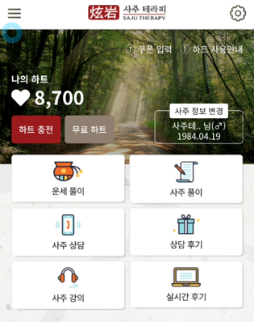
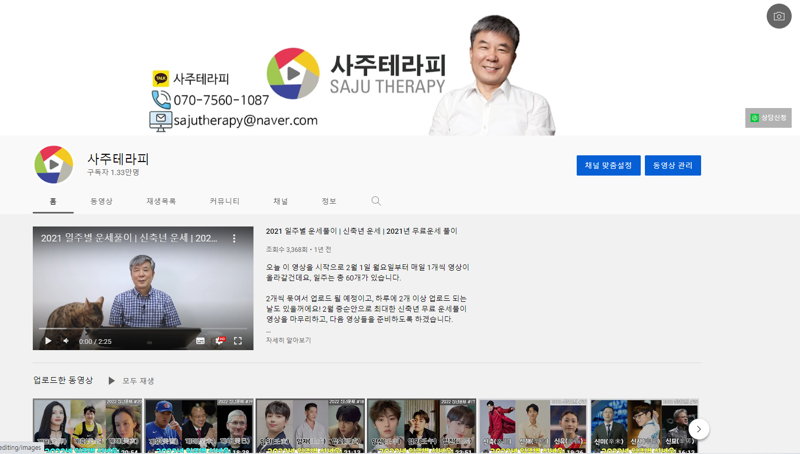

사주테라피 플랜
사주상담
어플리케이션
사주강의
유튜브
사주상담
현암 김호진 원장 사주상담
사주명리학은
운명기상학입니다.
어플리케이션
오늘의 운세는 사주테라피
운세와 궁합. 그리고
승부예측
까지 가능하다고!?

사주강의
이제 내 사주는 내가 배운다.
한자를 몰라도, 기초가 없어도
쉽고 재밌게
배울 수 있다!
유튜브 채널
구독자 1만 3천의 사주전문가 현암 김호진의 유튜브 채널
연예인 사주, e스포츠 승부예측, 라이브 방송
등 다양한 컨텐츠
